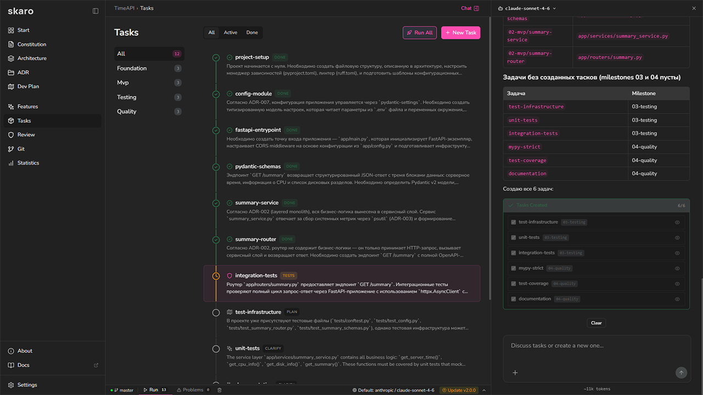
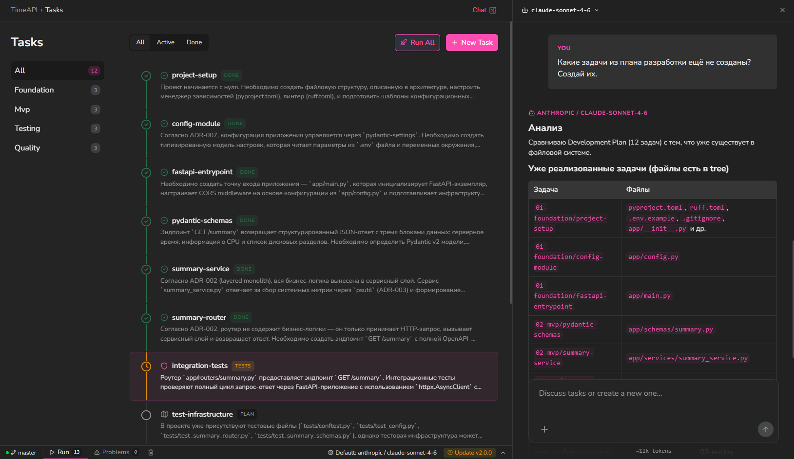
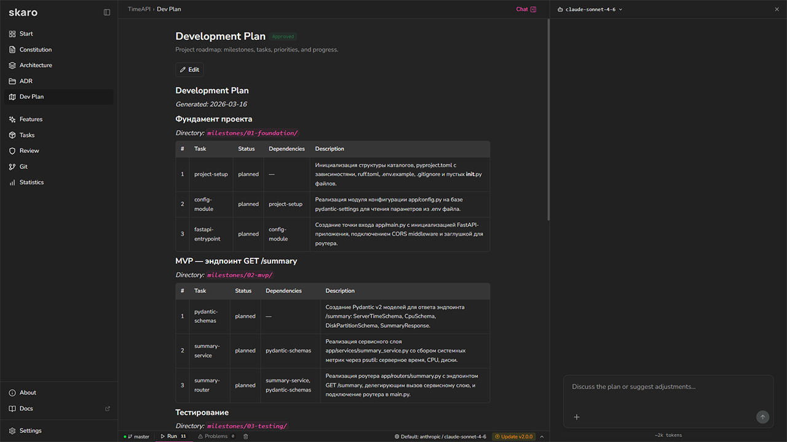

Единый стандарт элементов для всех экранов Skaro. Всё интерактивно: наводите, кликайте, вводите текст.
Акцент — синий, только для кликабельного и «требует внимания». Коралл — некликабельные выделения (код, команды). Зелёный — только «+» в диффе.
Nunito Sans — интерфейс, JetBrains Mono — ID, пути, ветки, числа. Чистый белый не используется: максимум #ededed.
Точка без текста, смысл — в подсказке. Работает — серая мигающая. Требует внимания (ответ, ревью, завершено) — синяя статичная. Ошибка — красная. Заблокировано — замок. Во вкладках — никаких чисел.
Один вид для всех взаимоисключающих выборов: вид, сортировка, архив, усилие, изоляция. Подложка почти чёрная, активный пункт — цвета основного фона.
Только кастомные, не системные селекты. Фильтр — множественный выбор с цветным маркером статуса или логотипом агента. Селект модели — одиночный, сверху самые сильные, с пояснением. Меню действий — список с разделителем перед опасным пунктом. Закрываются кликом снаружи.
Правило поверхностей: поле и селект выглядят одинаково на любом фоне — страница, карточка, модалка. Селект — фон #0f0f0f без обводки, темнее любой поверхности (карточка #1a1a1a–#1f1f1f, модалка #1e1e1e), наведение #0b0b0b. Текстовое поле — тот же фон и кольцо 1px #2a2a2a, фокус — синее кольцо. Поле и селект не ставятся прямо на фон страницы — только в карточку или модалку. Открытый список всегда светлее поверхности (#272727) и с тенью. Свои цвета полей на отдельных экранах не допускаются. Чекбоксы тёмные, без акцента. Радио-карточка — для выбора с пояснением; рискованный вариант подсвечен жёлтым.
Все карточки одинаковые, отличается только индикатор справа сверху. Сверху название, ниже этап, внизу время слева и лого агента справа. Клик открывает задачу, выделение — только чекбоксом (появляется при наведении или выборе). Статус колонки на карточке не дублируется.
Только то, что реально отдают агенты. Лента: текст (Markdown, код, таблицы, ссылки путь:строка), размышления, группа чтения, строки событий — правка, команда, субагент, прочий инструмент, служебные строки, изображения, живая строка «агент сейчас…». Карточки: вопрос (шаги, чекбоксы, свой вариант, секрет, превью), разрешение, план агента, форма MCP. Над полем ввода — план и фоновые задачи, в поле — вложения, меню «/» и «@», контекст, режим прав. Сообщение пользователя — приглушённый синий, скругление 20. Под ответом — «скопировать». Поле ввода шире ленты на 12px с каждой стороны: сверху текст (2 строки, растёт до 7), снизу панель — плюс, модель, отправка.
Всё, что ждёт пользователя, — карточка; всё, что случилось, — строка. Все состояния — в макете «Лента агента». Названия инструментов агента не показываем — только глифы и человеческие формулировки.
requireRole» · открыл 1 страницуВсе состояния — в «Ленте агента», разделы 9–10 и на экране «Настройки».
src/auth/policy.ts…


Тултип — чёрный, без обводки, ширина по содержимому, не выходит за окно. Баннер — текст одного цвета, соответствующего типу. Прогресс — только оттенки серого. Модалка — для любых действий с задачами (удаление, перенос, архив).